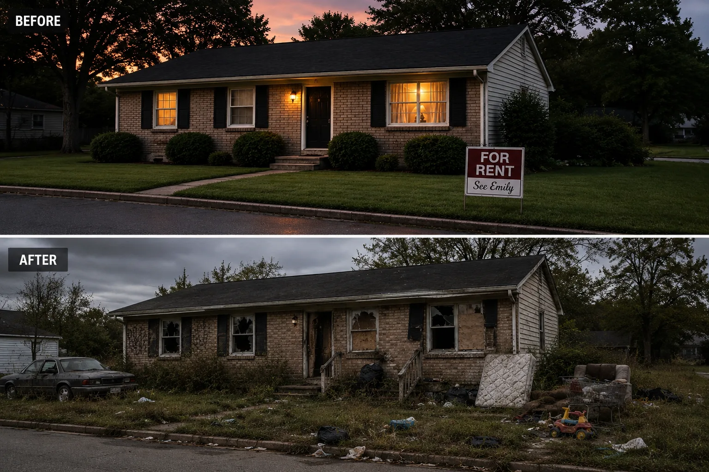

01
Before
The house is clean, maintained, landscaped, and ready for a tenant. It reflects Samuel's approach: keep the property in good condition, treat people fairly, and protect what has been built.
The Whitfield Rental
A good house. A bad decision. Months of damage. And an estate that keeps paying long after the rent stops.
Where the Damage Becomes Visible
The Whitfield rental begins as one of Samuel Mercer's ordinary success stories: a clean, maintained home meant to provide steady income and a decent place for someone to live. After Samuel's death, Emily replaces a dependable tenant with the Whitfields. What seems manageable at first becomes one of the estate's most costly mistakes.
The Rental
The contrast between the property Samuel maintained and the condition left behind becomes one of the clearest signs of the estate's decline.

01
The house is clean, maintained, landscaped, and ready for a tenant. It reflects Samuel's approach: keep the property in good condition, treat people fairly, and protect what has been built.
02
Emily allows the Whitfields into the property after removing a tenant who had been paying and caring for the home. Rent problems follow. Promises replace payments. Weeks turn into months while the condition of the property begins changing behind closed doors.
03
By the time the tenancy collapses, the rental bears little resemblance to the home Samuel maintained. Broken windows, damaged finishes, discarded furniture, trash, neglected landscaping, and general destruction turn a once-stable asset into another estate expense.
04
After the eviction, Emily turns to Tyler to repair the property. He has little experience doing the work, yet the estate begins paying him week after week. The promised renovation drags on while the house remains unfinished and the money continues leaving the estate.
The Larger Meaning
The Whitfield property is not the entire story of Demise. It is the moment when private choices become visible in lumber, broken glass, unpaid rent, receipts, and unfinished rooms. What the family could dismiss as bookkeeping now has an address.
Continue Exploring